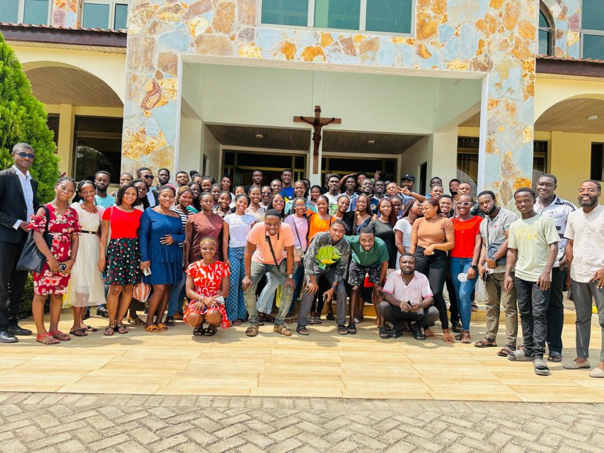
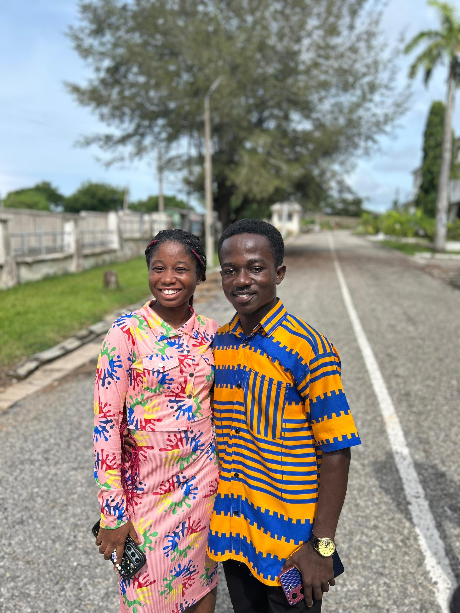
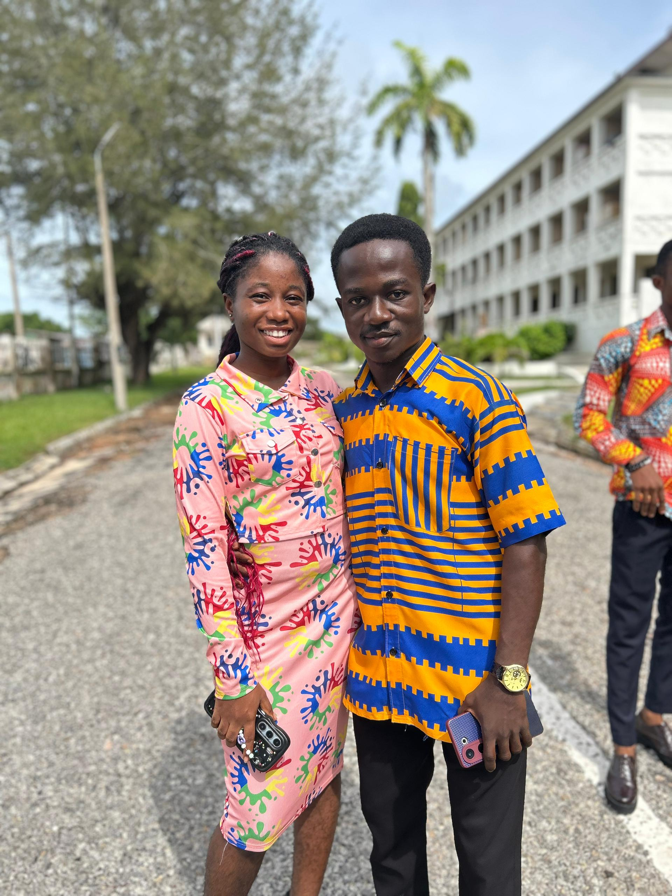
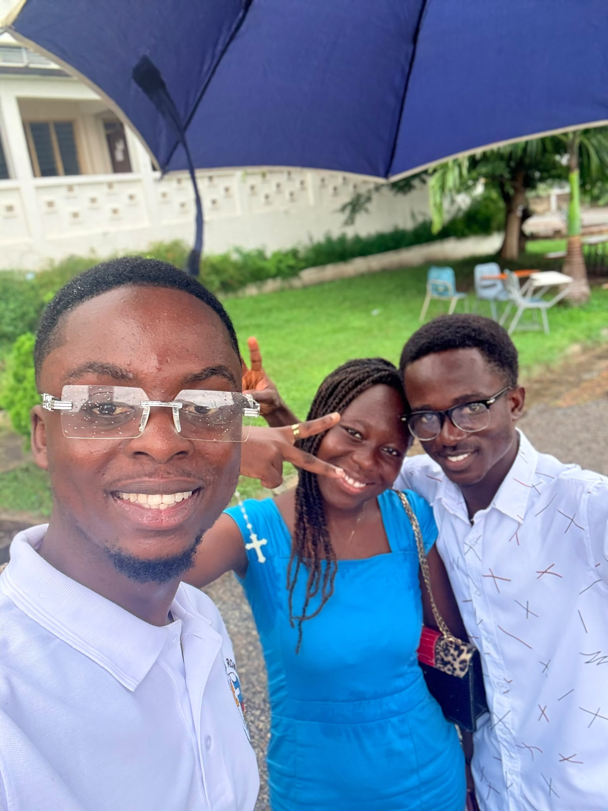
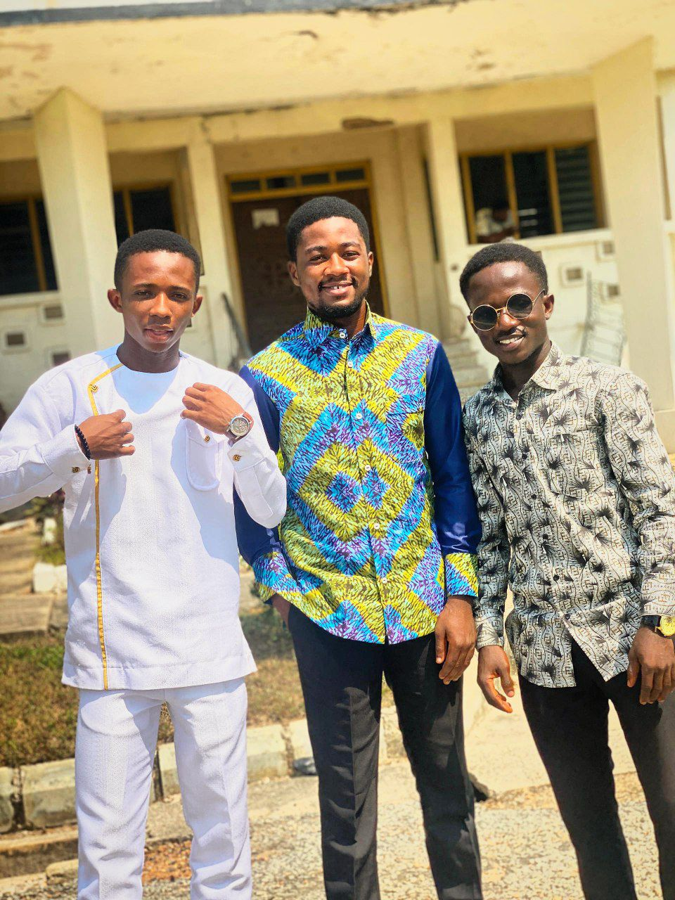
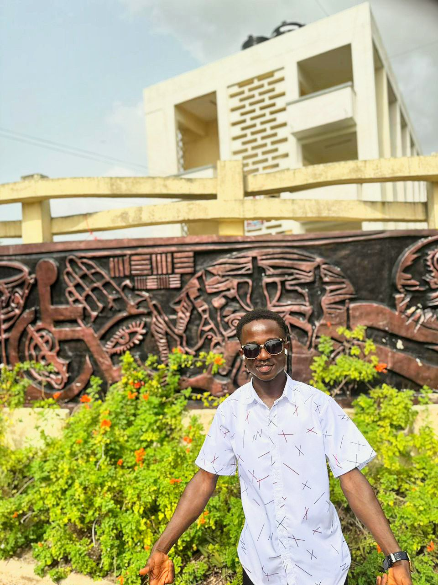
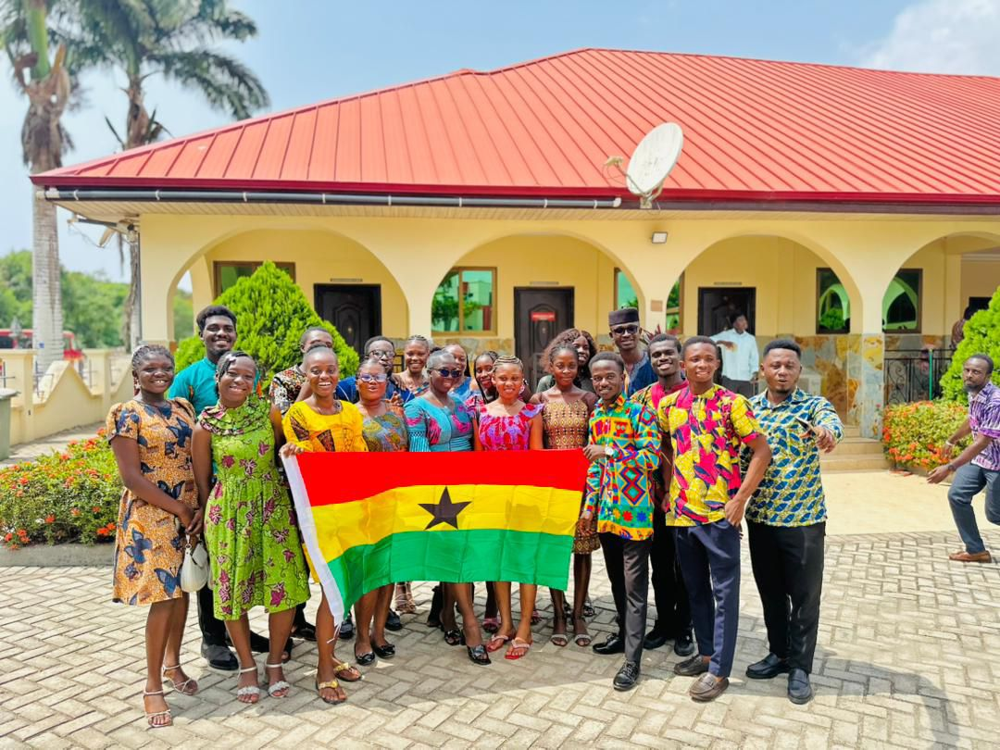

📚 Education
Thoughts about learning, education, skills, and opportunities.
Thinking deeply. Creating freely. Sharing ideas.
Hello, I'm Nketia-Marfo. Welcome to my personal website — a space where I share ideas, stories, projects, experiences, and things I'm learning along the way.
I am curious about education, economics, music, culture, society, creativity, and the opportunities available to young people.
Here, I explore questions, share what I create, and document ideas that matter to me.


I enjoy learning, asking questions, creating, and looking for connections between ideas that may seem unrelated.
My interests include education and economics, while music and culture remain important parts of how I express myself and understand the world around me.
This website is a place to keep growing, creating, and sharing that journey.
Thoughts about learning, education, skills, and opportunities.
Exploring work, money, development, opportunity, and society.
Sharing my interest in music, creativity, performance, and culture.
Exploring ideas and possibilities that can turn knowledge and creativity into something meaningful.



Exploring the relationship between education, skills, work, and opportunity.
Thinking about how music and creativity can connect with meaningful opportunities.
Exploring society, environmental issues, and the questions behind them.




Have an idea, question, opportunity, or something interesting to discuss?
Email me at: nketiamarfo157@gmail.com
Visit my Contact page →